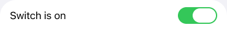
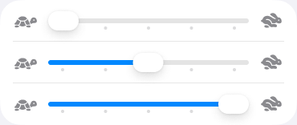
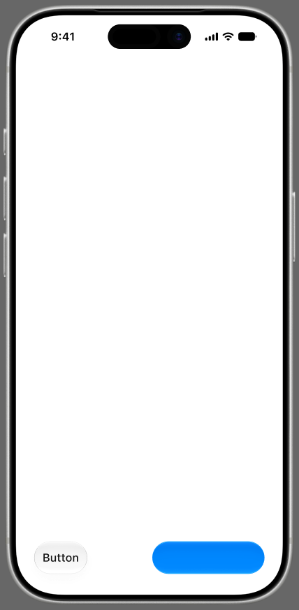

--lg-knob-fill = 白 86%），
需要真机截图才能定。落影强度同样未经校准。

--lg-knob-fill = 白 86%，
按下时淡出让折射显形），所以已填充段的蓝色会透出一点 —— 这个程度是推定值，未经真机校准；
④ 左边未填充段是 rgb(228 228 228) 实色，右边是磨砂玻璃 —— 压在白底上会更浅。

#007AFF 上只有
4.02:1，不过 WCAG AA；本库用解出来的 #0071eb（4.60:1）。
这是刻意偏离 —— PROJECT_SPEC §13 写明可读性不可协商。肉眼几乎看不出色差；
② 字体不同（SF Pro vs 系统回退字体），玻璃按钮的宽度因此差约 3px；
③ 左图是 Figma 静态稿，画不出折射 —— 本库的玻璃按钮在**按下时**才升级为
Layer I 真玻璃，静态对照图里看不到那一态。